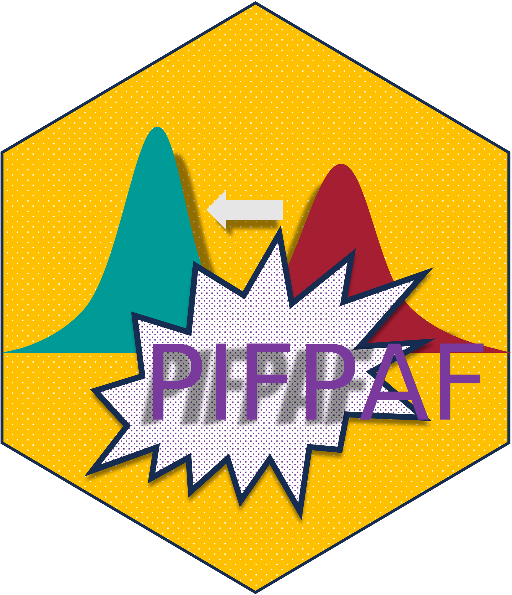

pifpaf: Potential Impact Fraction and Population Attributable Fraction Estimation 
THIS IS STILL A WORK IN PROCESS
The pifpaf package corresponds to an update on the previous homonimous package developed at INSP.
Installation
You can install the development version of pifpaf from GitHub with:
# install.packages("devtools")
devtools::install_github("RodrigoZepeda/pifpaf")